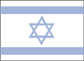

{kind=link}


![[Country map of Israel]](../maps/is-map.jpg)
| Israel (also see separate Gaza Strip and West Bank entries) |
 |
|
| | |
| Introduction |
Background: Following World War II, the British withdrew from their mandate of Palestine, and the UN partitioned the area into Arab and Jewish states, an arrangement rejected by the Arabs. Subsequently, the Israelis defeated the Arabs in a series of wars without ending the deep tensions between the two sides. The territories occupied by Israel since the 1967 war are not included in the Isreal country profile, unless otherwise noted. In keeping with the framework established at the Madrid Conference in October 1991, bilateral negotiations are being conducted between Israel and Palestinian representatives (from the Israeli-occupied West Bank and Gaza Strip) and Israel and Syria, to achieve a permanent settlement. On 25 April 1982, Israel withdrew from the Sinai pursuant to the 1979 Israel-Egypt Peace Treaty. Outstanding territorial and other disputes with Jordan were resolved in the 26 October 1994 Israel-Jordan Treaty of Peace.
| Geography |
Location: Middle East, bordering the Mediterranean Sea, between Egypt and Lebanon
Geographic coordinates: 31 30 N, 34 45 E
Map references: Middle East
Area:
total:
20,770 sq km
land:
20,330 sq km
water:
440 sq km
Area - comparative: slightly smaller than New Jersey
Land boundaries:
total:
1,006 km
border countries:
Egypt 255 km, Gaza Strip 51 km, Jordan 238 km, Lebanon 79 km, Syria 76 km, West Bank 307 km
Coastline: 273 km
Maritime claims:
continental shelf:
to depth of exploitation
territorial sea:
12 nm
Climate: temperate; hot and dry in southern and eastern desert areas
Terrain: Negev desert in the south; low coastal plain; central mountains; Jordan Rift Valley
Elevation extremes:
lowest point:
Dead Sea -408 m
highest point:
Har Meron 1,208 m
Natural resources: copper, phosphates, bromide, potash, clay, sand, sulfur, asphalt, manganese, small amounts of natural gas and crude oil
Land use:
arable land:
17%
permanent crops:
4%
permanent pastures:
7%
forests and woodland:
6%
other:
66% (1993 est.)
Irrigated land: 1,800 sq km (1993 est.)
Natural hazards: sandstorms may occur during spring and summer
Environment - current issues: limited arable land and natural fresh water resources pose serious constraints; desertification; air pollution from industrial and vehicle emissions; groundwater pollution from industrial and domestic waste, chemical fertilizers, and pesticides
Environment - international agreements:
party to:
Biodiversity, Climate Change, Desertification, Endangered Species, Hazardous Wastes, Nuclear Test Ban, Ozone Layer Protection, Ship Pollution, Wetlands
signed, but not ratified:
Climate Change-Kyoto Protocol, Marine Life Conservation
Geography - note: there are 231 Israeli settlements and civilian land use sites in the West Bank, 42 in the Israeli-occupied Golan Heights, 24 in the Gaza Strip, and 29 in East Jerusalem (August 1999 est.)
| People |
Population:
5,842,454
note:
includes about 171,000 Israeli settlers in the West Bank, about 20,000 in the Israeli-occupied Golan Heights, about 6,500 in the Gaza Strip, and about 172,000 in East Jerusalem (July 2000 est.)
Age structure:
0-14 years:
28% (male 825,443; female 787,159)
15-64 years:
63% (male 1,831,142; female 1,820,424)
65 years and over:
9% (male 248,695; female 329,591) (2000 est.)
Population growth rate: 1.67% (2000 est.)
Birth rate: 19.32 births/1,000 population (2000 est.)
Death rate: 6.22 deaths/1,000 population (2000 est.)
Net migration rate: 3.63 migrant(s)/1,000 population (2000 est.)
Sex ratio:
at birth:
1.05 male(s)/female
under 15 years:
1.05 male(s)/female
15-64 years:
1.01 male(s)/female
65 years and over:
0.75 male(s)/female
total population:
0.99 male(s)/female (2000 est.)
Infant mortality rate: 7.9 deaths/1,000 live births (2000 est.)
Life expectancy at birth:
total population:
78.57 years
male:
76.57 years
female:
80.67 years (2000 est.)
Total fertility rate: 2.6 children born/woman (2000 est.)
Nationality:
noun:
Israeli(s)
adjective:
Israeli
Ethnic groups: Jewish 80.1% (Europe/America-born 32.1%, Israel-born 20.8%, Africa-born 14.6%, Asia-born 12.6%), non-Jewish 19.9% (mostly Arab) (1996 est.)
Religions: Jewish 80.1%, Muslim 14.6% (mostly Sunni Muslim), Christian 2.1%, other 3.2% (1996 est.)
Languages: Hebrew (official), Arabic used officially for Arab minority, English most commonly used foreign language
Literacy:
definition:
age 15 and over can read and write
total population:
95%
male:
97%
female:
93% (1992 est.)
| Government |
Country name:
conventional long form:
State of Israel
conventional short form:
Israel
local long form:
Medinat Yisra'el
local short form:
Yisra'el
Data code: IS
Government type: parliamentary democracy
Capital:
Jerusalem
note:
Israel proclaimed Jerusalem as its capital in 1950, but the US, like nearly all other countries, maintains its Embassy in Tel Aviv
Administrative divisions: 6 districts (mehozot, singular - mehoz); Central, Haifa, Jerusalem, Northern, Southern, Tel Aviv
Independence: 14 May 1948 (from League of Nations mandate under British administration)
National holiday: Independence Day, 14 May 1948; note - Israel declared independence on 14 May 1948, but the Jewish calendar is lunar and the holiday may occur in April or May
Constitution: no formal constitution; some of the functions of a constitution are filled by the Declaration of Establishment (1948), the Basic Laws of the parliament (Knesset), and the Israeli citizenship law
Legal system: mixture of English common law, British Mandate regulations, and, in personal matters, Jewish, Christian, and Muslim legal systems; in December 1985, Israel informed the UN Secretariat that it would no longer accept compulsory ICJ jurisdiction
Suffrage: 18 years of age; universal
Executive branch:
chief of state:
President Ezer WEIZMAN (since 13 May 1993)
head of government:
Prime Minister Ehud BARAK (since 6 July 1999)
cabinet:
Cabinet selected by prime minister and approved by the Knesset
elections:
president elected by the Knesset for a five-year term; election last held 4 March 1998 (next to be held NA March 2003); prime minister elected by popular vote for a four-year term; election last held 17 May 1999 (next to be held NA May 2003); note - in March 1992, the Knesset approved legislation, effective in 1996, which allowed for the direct election of the prime minister; under the new law, each voter casts two ballots - one for the direct election of the prime minister and one for a party in the Knesset; the candidate that receives the largest percentage of the popular vote then works to form a coalition with other parties to achieve a parliamentary majority of 61 seats; finally, the candidate must submit his or her cabinet to the Knesset for approval and this must be done within 45 days of the election; in contrast to the old system, under the new law, the prime minister's party need not be the single-largest party in the Knesset
election results:
Ezer WEIZMAN reelected president by the 120-member Knesset with a total of 63 votes, other candidate, Shaul AMOR, received 49 votes (there were seven abstentions and one absence); Ehud BARAK elected prime minister; percent of vote - Ehud BARAK 56.08%, Binyamin NETANYAHU 43.92%
note:
government coalition - One Israel, Shas, MERETZ, Yisra'el Ba'Aliya, Center Party, National Religious Party
Legislative branch:
unicameral Knesset or parliament (120 seats; members elected by popular vote to serve four-year terms)
elections:
last held 17 May 1999 (next to be held NA May 2003)
election results:
percent of vote by party - One Israel 20.2%, Likud Party 14.1%, Shas 13%, MERETZ 7.6%, Yisra'el Ba'Aliya 5.1%, Shinui 5%, Center Party 5%, National Religious Party 4.2%, United Torah Judaism 3.7%, United Arab List 3.4%, National Union 3%, Hadash 2.6%, Yisra'el Beiteinu 2.6%, Balad 1.9%, One Nation 1.9%, Democratic Movement NA (party formed after election, members elected under Yisra'el Ba'Aliya list); seats by party - One Israel 26, Likud Party 19, Shas 17, MERETZ 10, Yisra'el Ba'Aliya 4, Shinui 6, Center Party 6, National Religious Party 5, United Torah Judaism 5, United Arab List 5, National Union 4, Hadash 3, Yisra'el Beiteinu 4, Democratic Movement 2 (party formed after election, members elected under Yisra'el Ba'Aliya list), Balad 2, One Nation 2
Judicial branch: Supreme Court, appointed for life by the president
Political parties and leaders: Balad [Azmi BISHARA]; Center Party [Yitzhak MORDECHAI]; Democratic Movement [Roman BRONFMAN]; Gesher [David LEVI]; Hadash [Muhammad BARAKA]; Labor Party [Ehud BARAK]; Likud Party [Ariel SHARON]; MERETZ [Yossi SARID]; Moledet [Rehavam ZEEVI]; National Democratic Alliance (Balad) [leader NA]; National Religious Party [Yitzhak LEVY]; National Union [Rehavam ZEEVI] (includes Herut, Tekuma, Yisre'el Beiteinu and Moledet); One Israel [Ehud BARAK] (includes Labor, Gesher, and Meimad); One Nation [Amir PERETZ]; Shas [Eliyahu YISHAI]; Shinui [Tommy LAPID]; Third Way [Avigdor KAHALANI]; Tzomet [Rafael EITAN]; United Arab List [Abd al-Malik DAHAMSHAH]; United Torah Judaism [Meir PORUSH]; Yisra'el Ba'Aliya [Natan SHARANSKY]; Yisra'el Beiteinu [Avigdor LIEBERMAN]
Political pressure groups and leaders: Gush Emunim, Israeli nationalists advocating Jewish settlement on the West Bank and Gaza Strip; Peace Now supports territorial concessions in the West Bank and is critical of government's Lebanon policy
International organization participation: BSEC (observer), CCC, CE (observer), CERN (observer), EBRD, ECE, FAO, IADB, IAEA, IBRD, ICAO, ICC, ICFTU, IDA, IFAD, IFC, ILO, IMF, IMO, Inmarsat, Intelsat, Interpol, IOC, IOM, ISO, ITU, OAS (observer), OPCW, OSCE (partner), PCA, UN, UNCTAD, UNESCO, UNHCR, UNIDO, UPU, WHO, WIPO, WMO, WToO, WTrO
Diplomatic representation in the US:
chief of mission:
Ambassador David IVRY
chancery:
3514 International Drive NW, Washington, DC 20008
telephone:
[1] (202) 364-5500
FAX:
[1] (202) 364-5610
consulate(s) general:
Atlanta, Boston, Chicago, Houston, Los Angeles, Miami, New York, Philadelphia, and San Francisco
Diplomatic representation from the US:
chief of mission:
Ambassador Martin S. INDYK
embassy:
71 Hayarkon Street, Tel Aviv
mailing address:
PSC 98, Unit 7228, APO AE 09830
telephone:
[972] (3) 519-7575
FAX:
[972] (3) 517-3227
consulate(s) general:
Jerusalem; note - an independent US mission, established in 1928, whose members are not accredited to a foreign government
Flag description: white with a blue hexagram (six-pointed linear star) known as the Magen David (Shield of David) centered between two equal horizontal blue bands near the top and bottom edges of the flag
| Economy |
Economy - overview: Israel has a technologically advanced market economy with substantial government participation. It depends on imports of crude oil, grains, raw materials, and military equipment. Despite limited natural resources, Israel has intensively developed its agricultural and industrial sectors over the past 20 years. Israel is largely self-sufficient in food production except for grains. Diamonds, high-technology equipment, and agricultural products (fruits and vegetables) are leading exports. Israel usually posts sizable current account deficits, which are covered by large transfer payments from abroad and by foreign loans. Roughly half of the government's external debt is owed to the US, which is its major source of economic and military aid. The influx of Jewish immigrants from the former USSR topped 750,000 during the period 1989-99, bringing the population of Israel from the former Soviet Union to 1 million, one-sixth of the total population, and adding scientific and professional expertise of substantial value for the economy's future. The influx, coupled with the opening of new markets at the end of the Cold War, energized Israel's economy, which grew rapidly in the early 1990s. But growth began slowing in 1996 when the government imposed tighter fiscal and monetary policies and the immigration bonus petered out. Those policies brought inflation down to record low levels in 1999 and, coupled with improved prospects for the Middle East peace process, are creating a climate for stronger GDP growth in the year 2000.
GDP: purchasing power parity - $105.4 billion (1999 est.)
GDP - real growth rate: 2.1% (1999 est.)
GDP - per capita: purchasing power parity - $18,300 (1999 est.)
GDP - composition by sector:
agriculture:
2%
industry:
17%
services:
81% (1997 est.)
Population below poverty line: NA%
Household income or consumption by percentage share:
lowest 10%:
2.8%
highest 10%:
26.9% (1992)
Inflation rate (consumer prices): 1.3% (1999 est.)
Labor force: 2.3 million (1997)
Labor force - by occupation: public services 31.2%, manufacturing 20.2%, finance and business 13.1%, commerce 12.8%, construction 7.5%, personal and other services 6.4%, transport, storage, and communications 6.2%, agriculture, forestry, and fishing 2.6% (1996)
Unemployment rate: 9.1% (1999 est.)
Budget:
revenues:
$40 billion
expenditures:
$42.4 billion, including capital expenditures of $NA (2000 est.)
Industries: food processing, diamond cutting and polishing, textiles and apparel, chemicals, metal products, military equipment, transport equipment, electrical equipment, potash mining, high-technology electronics, tourism
Industrial production growth rate: 5.4% (1996)
Electricity - production: 35.338 billion kWh (1998)
Electricity - production by source:
fossil fuel:
99.9%
hydro:
0.1%
nuclear:
0%
other:
0% (1998)
Electricity - consumption: 31.805 billion kWh (1998)
Electricity - exports: 1.061 billion kWh (1998)
Electricity - imports: 2 million kWh (1998)
Agriculture - products: citrus, vegetables, cotton; beef, poultry, dairy products
Exports: $23.5 billion (f.o.b., 1999)
Exports - commodities: machinery and equipment, software, cut diamonds, chemicals, textiles and apparel, agricultural products
Exports - partners: US 32%, UK, Hong Kong, Benelux, Japan, Netherlands (1997)
Imports: $30.6 billion (f.o.b., 1999)
Imports - commodities: raw materials, military equipment, investment goods, rough diamonds, fuels, consumer goods
Imports - partners: US 19%, Benelux 12%, Germany 9%, UK 8%, Italy 7%, Switzerland 6% (1997)
Debt - external: $18.7 billion (1997)
Economic aid - recipient: $1.1 billion from the US (1999)
Currency: 1 new Israeli shekel (NIS) = 100 new agorot
Exchange rates: new Israeli shekels (NIS) per US$1 - 4.2260 (November 1999), 3.8001 (1999), 3.4494 (1997), 3.1917 (1996), 3.0113 (1995)
Fiscal year: calendar year
| Communications |
Telephones - main lines in use: 2.8 million (1999)
Telephones - mobile cellular: 2.5 million (1999)
Telephone system:
most highly developed system in the Middle East although not the largest
domestic:
good system of coaxial cable and microwave radio relay; all systems are digital
international:
3 submarine cables; satellite earth stations - 3 Intelsat (2 Atlantic Ocean and 1 Indian Ocean)
Radio broadcast stations: AM 23, FM 15, shortwave 2 (1998)
Radios: 3.07 million (1997)
Television broadcast stations: 24 (plus 31 low-power repeaters) (1997)
Televisions: 1.69 million (1997)
Internet Service Providers (ISPs): 23 (1999)
| Transportation |
Railways:
total:
610 km
standard gauge:
610 km 1.435-m gauge (1996)
Highways:
total:
15,965 km
paved:
15,965 km (including 56 km of expressways)
unpaved:
0 km (1998 est.)
Pipelines: crude oil 708 km; petroleum products 290 km; natural gas 89 km
Ports and harbors: Ashdod, Ashqelon, Elat (Eilat), Hadera, Haifa, Tel Aviv-Yafo
Merchant marine:
total:
20 ships (1,000 GRT or over) totaling 711,831 GRT/823,929 DWT
ships by type:
container 19, roll-on/roll-off 1 (1999 est.)
Airports: 58 (1999 est.)
Airports - with paved runways:
total:
33
over 3,047 m:
2
2,438 to 3,047 m:
7
1,524 to 2,437 m:
7
914 to 1,523 m:
10
under 914 m:
7 (1999 est.)
Airports - with unpaved runways:
total:
25
2,438 to 3,047 m:
1
1,524 to 2,437 m:
2
914 to 1,523 m:
2
under 914 m:
20 (1999 est.)
Heliports: 2 (1999 est.)
| Military |
Military branches: Israel Defense Forces (includes ground, naval, and air components), Pioneer Fighting Youth (Nahal), Frontier Guard, Chen (women); note - historically there have been no separate Israeli military services
Military manpower - military age: 18 years of age
Military manpower - availability:
males age 15-49:
1,499,186
females age 15-49:
1,462,063 (2000 est.)
Military manpower - fit for military service:
males age 15-49:
1,226,903
females age 15-49:
1,192,319 (2000 est.)
Military manpower - reaching military age annually:
males:
50,348
females:
47,996 (2000 est.)
Military expenditures - dollar figure: $8.7 billion (FY99)
Military expenditures - percent of GDP: 9.4% (FY99)
| Transnational Issues |
Disputes - international: West Bank and Gaza Strip are Israeli-occupied with current status subject to the Israeli-Palestinian Interim Agreement - permanent status to be determined through further negotiation; Golan Heights is Israeli-occupied; Israeli troops in southern Lebanon since June 1982
Illicit drugs: increasingly concerned about cocaine and heroin abuse; drugs arrive in country from Lebanon and increasingly Jordan